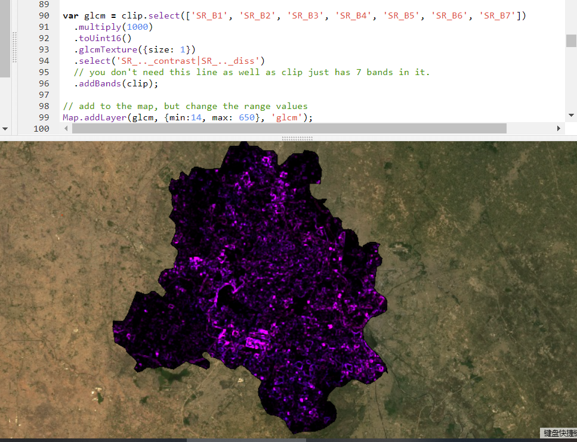
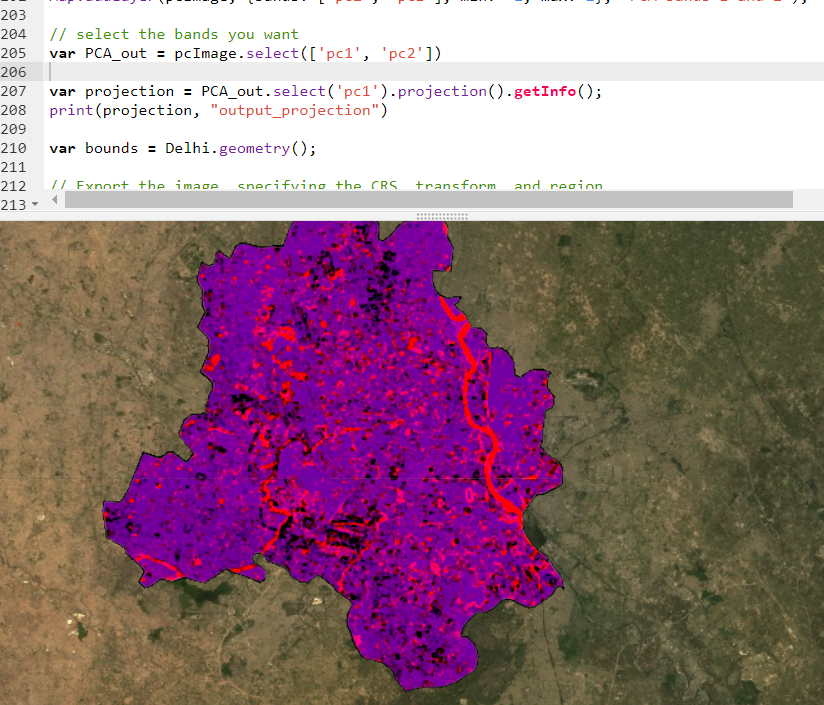
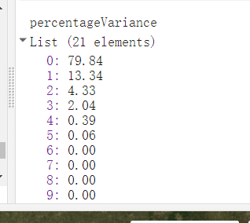

7 Week6: GEE
8 Summary
This week’s lecture introduced a new remote server tool- Google Earth Engine(GEE).Several parts are included:
8.1 brief introduction of GEE
- data format
- language
- scale
- projections
8.2 practical GEE
- data collection
- image reduction(PCA)
- clip and join
- ML analysis with GEE coding (further teaching will be given next two weeks)
8.3 practical result
This week , we basically try a new platform and a new language.We do similar things to GIS course.
Take Delhi as our research area, reduce image collection to a single image by mean,median,something like that.join them or clip them to right border.Then show texture and main traits by extract main component.

 
9 Application
Google Earth Engine (GEE) has emerged as a pivotal cloud-based platform for processing and analyzing vast amounts of remote sensing data.For example:
Habibie (2022) discussed the application of machine learning using GEE for remote sensing analysis, ABOUT ML, we would explore deeper later at classification session. demonstrating GEE’s capabilities in lifting spatiotemporal constraints and handling massive amounts of geodata. The research highlighted the use of supervised and unsupervised machine algorithms for various applications, including land use land cover (LULC) and climate assessments (Habibie, 2022).
Clemente et al. (2020) . The study found that integrating Sentinel-1 and Sentinel-2 data improves classification accuracy, showcasing GEE’s potential in agricultural remote sensing (Clemente et al., 2020).
Velastegui-Montoya et al. (2023) conducted a bibliometric analysis of GEE, analyzing its scientific production and intellectual structure. The research revealed a broad spectrum of applications and a significant contribution from countries like China and the USA, indicating GEE’s global impact and multidisciplinary utility (Velastegui-Montoya et al., 2023).
These studies collectively underscore the innovative applications of GEE, combining with ML. They reveal a trend towards integrating texture features with other data types (e.g., spectral bands, vegetation indices) to enhance analysis accuracy and applicability.
10 Reflection
Reflecting on this session, I’ve gained a deeper understanding of GEE,were it the basic information or conducting platform.And I saw The steps are crucial for capturing the nuanced texture characteristics of the Earth’s surface, which can significantly impact the accuracy of remote sensing analyses.I found a useful tool that can use rs data to more complicated analysis like combining with machine learning,it really gives RS more possibilities.
Looking forward, I’m excited about the potential applications of GEE in my future work. Whether it’s enhancing land cover classification accuracy or exploring new domains of environmental monitoring, the insights gained from this session will undoubtedly serve as a valuable foundation. T
11 Reference
Habibie, M.I., 2022. THE APPLICATION OF MACHINE LEARNING USING GOOGLE EARTH ENGINE FOR REMOTE SENSING ANALYSIS. Jurnal Teknoinfo.
Clemente, J., Fontanelli, G., Ovando, G., Roa, Y., Lapini, A. and Santi, E., 2020. Google Earth Engine: Application Of Algorithms For Remote Sensing Of Crops In Tuscany (Italy). 2020 IEEE Latin American GRSS & ISPRS Remote Sensing Conference (LAGIRS), pp.195-200.
Velastegui-Montoya, A., Montalvan-Burbano, N., Carrión-Mero, P., Rivera-Torres, H., Sadeck, L. and Adami, M., 2023. Google Earth Engine: A Global Analysis and Future Trends. Remote Sensing, 15(14), 3675.